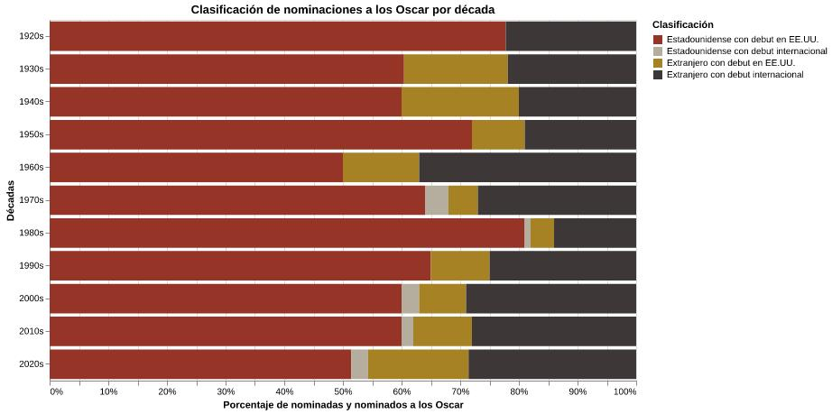

Reglamento en los Oscar
En las primeras ediciones de los Premios Oscar, un actor o una actriz podía ser nominado/a en más de una oportunidad por diferentes películas. En 1930 la Academia cambió el reglamento: se permitió que una nominación en la misma categoría reconociera el trabajo de un actor o una actriz. Este año, nuevamente se cambió el reglamento. Ahora se podrá hacer lo mismo que a inicios de los Premios: nominar más de una vez al mismo actor o a la misma actriz en la misma categoría, pero por diferentes actuaciones. De esta manera, Anne Hathaway, por ejemplo, podría ser nominada a “Mejor actriz” por dos películas diferentes, como podrían ser El diablo viste a la moda 2 o La Odisea.
Nominaciones en sus inicios
En la última década, los artistas extranjeros han ido tomando espacio en las nominaciones a los Oscar en las categorías “Mejor actor” y “Mejor actriz”. En 1929 se realizó la primera (y única) ceremonia de los Premios Oscar en los años 20s. En esa década, se obtuvo un total de 9 nominaciones, donde 7 se destinaron a artistas estadounidenses que debutaron en su país de origen (77,78%) y 2 a artistas extranjeros que debutaron en el cine no estadounidense (22,22%).

En los 30s, apareció un nuevo tipo de nominados para las categorías “Mejor actor” y “Mejor actriz”: actores y actrices extranjeros/as que debutaron en Estados Unidos. En este periodo, se fue perfilando el número total de nominaciones por década, alcanzando 96 nominaciones. Los porcentajes, en las décadas de 1930 y 1940, no tuvieron mayores variaciones. Respecto a las nominaciones de artistas extranjeros, estas aumentaron alrededor de 1%.
Luise Rainer y Emil Jannings
La actriz alemana Luise Rainer fue la primera mujer extranjera con debut cinematográfico fuera de Estados Unidos en ganar el premio a “Mejor actriz”, con la película The Great Ziegfeld en 1937. En 1938, Rainer repitió el galardón con The Good Earth. Ambos filmes fueron producidos por Estados Unidos.
Emil Jannings, actor de nacionalidad suiza, ganó el Oscar a “Mejor actor” en 1929 (1° edición de los premios) con la película The Last Command. Jannings estuvo nominado dos veces ese año en la misma categoría, una fue por The Last Command y otra por The Way of All Flesh. También ambas películas fueron producidas en Estados Unidos.
¿Cómo llegar a los Oscar?
A pesar de que Luise Rainer ganó el Oscar en las primeras ediciones, el camino para llegar a los premios no siempre es fácil. El caso de Merle Oberon es un ejemplo: en 1936, se volvió la primera mujer asiática en ser nominada a “Mejor actriz” por The Dark Angel. Sin embargo, para actuar, Oberon decidió pasarse por una actriz blanca y ocultar su nacionalidad. Durante ese tiempo, Hollywood aplicaba el Código Hays, que prohibía o restringía romances interraciales o temas considerados obscenos.
La actriz cubana Ana de Armas emigró de su país a los 16 años para cumplir su sueño: actuar. Primero llegó a España y consiguió su primer papel en una teleserie, después viajó a Estados Unidos para estudiar inglés e instalarse en Hollywood. Allí apenas tenía el dinero para solventar sus gastos y apenas tenía papeles pequeños. No fue hasta 2023 que fue nominada a “Mejor actriz” por la película Blonde, filme estadounidense. Ese año ganó Michelle Yeoh, actriz malaya que actuó para una película producida por Estados Unidos.
El actor español Antonio Banderas también presentó dificultades para ingresar a Hollywood: estaba limitado a cierto tipo de papeles y no dominaba el inglés. Poco a poco se fue consolidando en la industria y en 2020 obtuvo una nominación por la película Pain and Glory.
60s y 70s
La década de los 60s ha sido, hasta ahora, la década con menor porcentaje de nominados estadounidenses a las categorías “Mejor actor” y “Mejor actriz” en toda la historia de los Premios. Los artistas extranjeros y estadounidenses tuvieron el mismo porcentaje de nominaciones: 50%. En los 70s, se comenzó a nominar a artistas estadounidenses que hubieran debutado fuera de Estados Unidos. En esta década, los actores y actrices estadounidenses volvieron a dominar las nominaciones con un 68%, mientras que los extranjeros alcanzaron un 38%.
Los Oscar desde los 2000s hasta la actualidad
Hasta el momento, no pueden detectarse patrones en las nominaciones, solo se puede asegurar que los artistas estadounidenses que debutaron en Estados Unidos predominan en las categorías “Mejor actor” y “Mejor actriz”. Con relación a los 2000s, actores y actrices estadounidenses obtuvieron 63 nominaciones de un total de 100. Números muy similares se evidenciaron en la década de 2010. En la década de 2020, actualmente, se evidencia una disminución en este tipo de artistas: las nominaciones extranjeras están alcanzando el 45,71%.
Por el momento, solo queda esperar a ver de qué manera los cambios en el reglamento de la Academia de Artes y Ciencias Cinematográficas se reflejarán en los datos correspondiente a la década de 2020, dado que las nuevas normas comenzarán a regir en 2027 (99° edición).

Jessie Buckley, Michael B. Jordan y Amy Madigan en los Oscar 2026.
Enlaces
Para más información sobre las ceremonias de los Premios Oscar, visita: Oscar.org